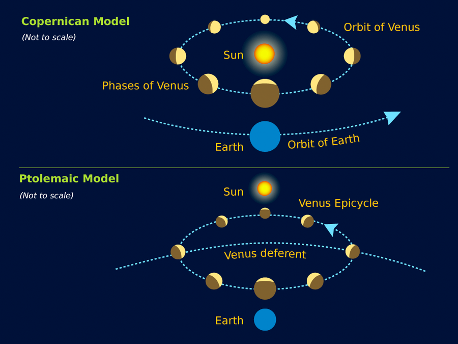
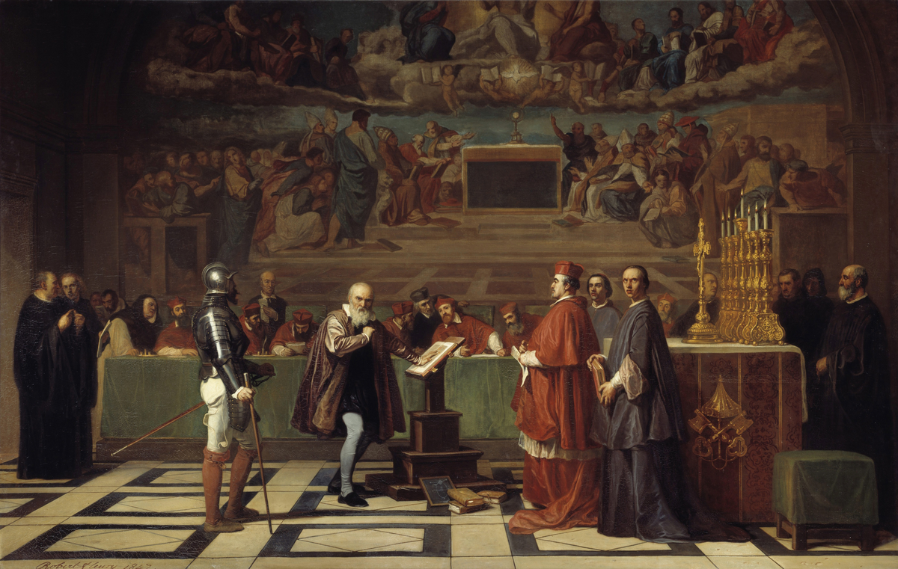

Astronomy 101
The status-quo persisted until one man, with his mighty telescope would change astronomy forever
Of course I am talking about Galileo, the famous astronomer, and also famous in every other professions like other men of his time. With his telescope, he made a lot of discoveries that would challenge the corrupt Church. He also developed on Copernicus' idea
for this crime, he was imprisoned and had to have a trial for Blasphemy
These are his discoveries
- Craters on the moon
- Jupiter's moons
- The stars of the Milky Way
- Sunspots
- The phases of Venus
Why did this anger the authorities?
Craters on the moon
Using his fancy new telescope, Galileo points his telescope at the moon, he discovers that the moon has mountains and trenches. Exactly like Earth!!!
not a very surprising discovery, as just by looking at the moon with your eyes, you can sort of tell. The Church let this one pass. Very wary of this man however.
Jupiter's moons
He once again points his telescope at a bright light in the sky. He discovers Io, Callisto, Europa, and Ganymede. This is Galileo's second strike in the eyes of the Church. He is however going to continue pointing his telescope at objects.
The stars of the milky way
Galileo recognized that this fuzzy band in the night sky is not just some mystical light. It was made up of THOUSANDS of individual stars. At this point the Church is getting worried and a bit outraged. This man has so far just made very observational
discoveries, they wouldn't be able to disprove it. However they must do something soon.
Sunspots

When he pointed his telescope at the sun, he observed nothing, because he went blind for 6 months. DO NOT STARE AT THE SOON, ESPECIALLY WITH TELESCOPES. Once he attached a filter on his telescope, he was not blinded and was able to observe black spots near the Sun.
He argued that these spots are on the surface of the sun itself. More pious astronomers argued that they were planets very close to the sun. Galileo argued that that can't be the case since their radial velocity varied. Thus confirming that the sun isn't perfect.
This is blasphemous and now the Church is on his way to his house. How dare he prove that the sun isn't perfect?
Phases of Venus
The biggest problem with Ptolemy's model at this point was that it did not allow for Venus to exhibit all 4 phases. Yet Venus was observed to have all these phases. This led Galileo to conclude that the Earth orbitted the Sun, as well as all other bodies in the Solar
System. The church has now arrived at the front door and Galileo is getting arrested. His trial is very soon.

Galileo was found "vehemently suspect of heresy" in 1633, and was sentenced to house arrest. He remained there until his death in 1642. Never having to stand down for his beliefs.
All images utilized in this project were obtained from sources other than my own.